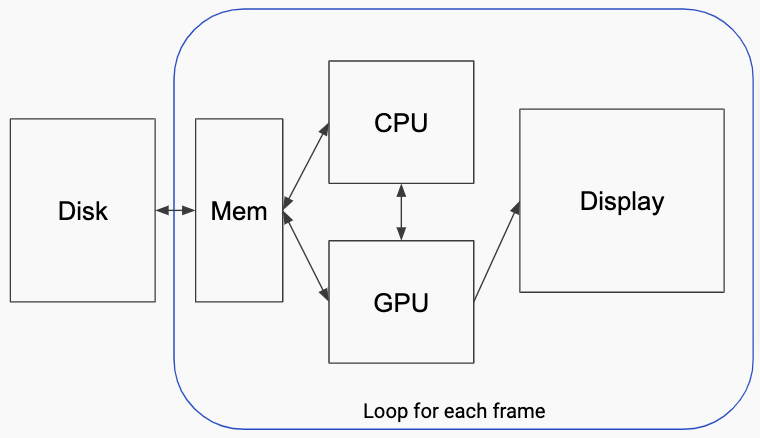
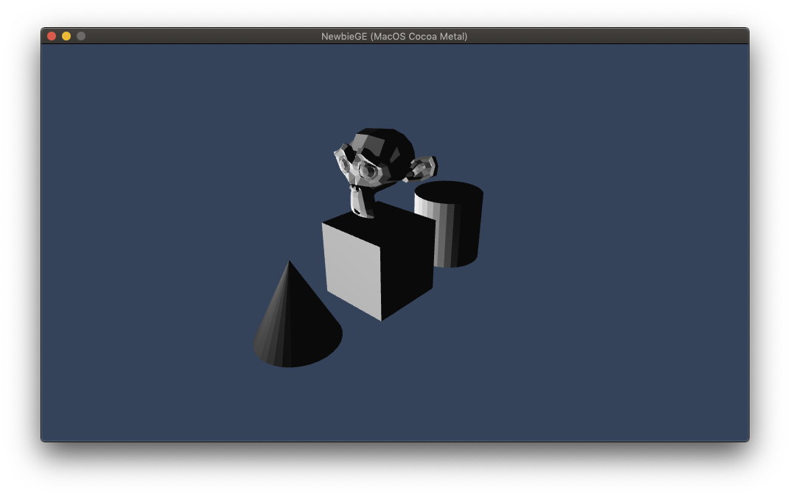
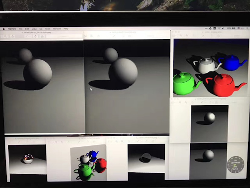
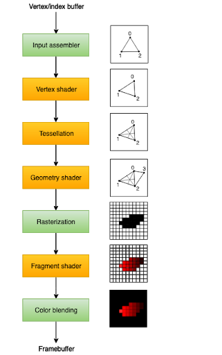
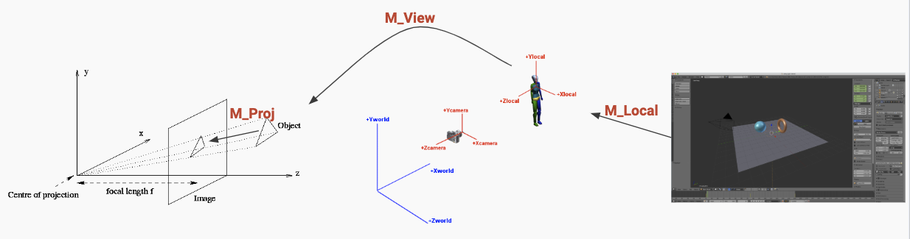
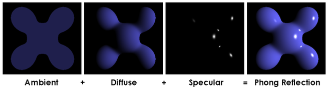
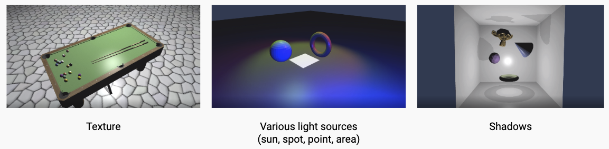

Introduction to 3D Rendering
This is a note to record my first game engine (NewbieGameEngine) developing experience in my spare time. The game engine is far to be completed but I can’t stop myself to share interesting things with you.
A little bit of story
Before this experience, I was always trying to understanding how a game engine coded up, but all I found is how to use specific rendering APIs (OpenGL, DirectX, etc.) or how to play with game engine already existed (Unity, Unreal, Godot, etc.).
Until some day, I found a great blog introducing how to code a game engine. This blog gave my a beautiful journey of C++ coding and finally I can’t believe I actually made my small prototype NewbieGameEngine.
Following I will record what I have learned in this period, and I hope it could minimize ones time to understand how a game engine coded up just like what I wonder in the past.
Overview
First let us see how hardwares work together for rending 3D space in display. I draw the image briefly to give a big image how data flow into display.

In a brief workflow, models and its assets are loaded to memory, then CPU processes the read data as well as handles user input to prepare all information (Vertices, Textures, Transformation matrices, etc.) as buffers for GPU to draw. Finally GPU reads buffers and draw them to display according to given rendering APIs instructions.
Rendering techniques
Rasterization pipeline
The most common rendering technique implemented by GPU is rasterization rendering. A basic result of rasterization is shown below (Phong model):

Ray tracing
And also, another technique is ray tracing. It trace every light ray along its course. Thus it have a lot of if-else judgements during rendering which is difficult for GPU to execute efficiently, as GPU is designed to perform mainly SIMD concurrency. Below is a naive ray tracing result only on CPU. (I touched ray tracing on university lecture called “Realistic Image Synthesis“ in my Master course).

By ray tracing, it is easily and in a uniform way to implement focal length changing, shadows, reflection, refraction, etc. Which requires tricky ways in rasterization pipeline.
Workflow of rendering engine
The main workflow of rendering engine is simple:
- Create a window that handles user inputs
- Parse scene data from disk and form data structure in memory
- Format data and write it into buffers
- Upload buffers to GPU for drawing
- Prepare rendering pipeline for rendering API.
- Decide rendering model (Shader programs)
- Conpute object position & projection to camera (Basic math)
Here I will only explain step 4. You could refer other three directly to my code at article_34 tag because it varies to different code design.
1. Rendering pipeline
The rasterization rendering pipeline works as follow (Image from Khronos):

The green parts are step that GPU pipeline will automatically do for you. The most used (and required) steps are Vertex shader that work for changing each vertex and fragment shader that paint color for target screen pixel.
Tessellation is a step to incresing triangles in a triangle or a quadrilateral. This is very useful to create different level of detail (LOD) terrain.
Geometry shader is a step to create new vertex other than input vertex. It is very useful if you want to visulize object normal vectors. Here is a good article written about geometry shader
Rendering pipeline is implemented by rendering APIs, like OpenGL, Vulkan, Metal, DirectX, WebGL, etc.
2. Basic Math
The basic math is how to project object to camera screen. There are three main step to do the projection:

- M_Local: To transform object local space to world space.
- M_View: To transform object from world into camera coordinates.
- M_Proj: To project 3D object to camera screen.
We could implement the basic math to vertex shader:1
2
3
4
5
6
7
8
9
10
11
12
13
14
15
16
17
18
19
20
21
22
23
24
25
26
27
28
29
30
31
32
33
34
35
36
37
38
39
40
41struct PerFrameConstants
{
float4x4 worldMatrix;
float4x4 viewMatrix;
float4x4 projectionMatrix;
float3 lightPosition;
float4 lightColor;
};
struct PerBatchConstants
{
float4x4 objectLocalMatrix;
};
struct basic_vert_main_out
{
float4 normal [[user(locn0)]];
float4 gl_Position [[position]];
};
struct basic_vert_main_in
{
float3 inputPosition [[attribute(0)]];
float3 inputNormal [[attribute(1)]];
};
vertex basic_vert_main_out basic_vert_main(basic_vert_main_in in [[stage_in]], constant PerFrameConstants& pfc [[buffer(10)]], constant PerBatchConstants& pbc [[buffer(11)]])
{
basic_vert_main_out out = {};
float4x4 transM = pfc.worldMatrix * pbc.objectLocalMatrix;
out.gl_Position = transM * float4(in.inputPosition, 1.0f);
out.gl_Position = pfc.viewMatrix * out.gl_Position;
out.gl_Position = pfc.projectionMatrix * out.gl_Position;
out.normal = transM * float4(in.inputNormal, 0.0f);
out.normal = pfc.viewMatrix * out.normal;
return out;
}
3. Rendering model
The rendering model describes the way an object looks under a light condition. For example we have basic Phong model:

And also Physically based rendering model (PBR):
Here we first introduce rather simple Phong model (Experience based not physically based). It contains threes parts:
- Ambient: uniform color for each pixel in object.
- Diffuse: diffuse light reflection
- Specular: specular light reflection
We could implement Phong model in fragment shader:1
2
3
4
5
6
7
8
9
10
11
12
13
14
15fragment float4 basic_frag_main(basic_vert_main_out in [[stage_in]], constant PerFrameConstants& pfc [[buffer(10)]])
{
float3 N = normalize(in.normal.xyz); // object normal
float3 L = normalize((pfc.viewMatrix * float4(pfc.lightPosition, 1.0f)).xyz - in.gl_Position.xyz); // light direction
float3 R = normalize(2 * dot(L,N) * N - L ); // reflection direction
float3 V = normalize(in.gl_Position.xyz); // camera view direction
float4 obj_color = float4(1.0, 1.0, 1.0, 1.0);
float4 Ambient = float4(0.03f, 0.03, 0.03, 1.0f);
float Diffuse_factor = dot(N, L); // angle between object normal and light direction
float Specular_factor = 0.01 * dot(R, V); // angle between reflect and view direction
return Ambient + pfc.lightColor * clamp(Diffuse_factor + Specular_factor, 0.0f, 1.0f) * obj_color;
}
Run the code
You could run the code by:
- clone article_34
- Open repo folder using VSCode
- Press “CMD+shift+p”
- Select “Run Task” and run “Cmake Test Release”
- Run task again “build Xcode project”
- Open generated xcode project and run “Editor” target
After this you would get this window:
Extensions
Apart from the basic rendering, we could add more effect to our rendering engine like texture, shadows, etc.

These extensions and PBR model are probably introduced later.